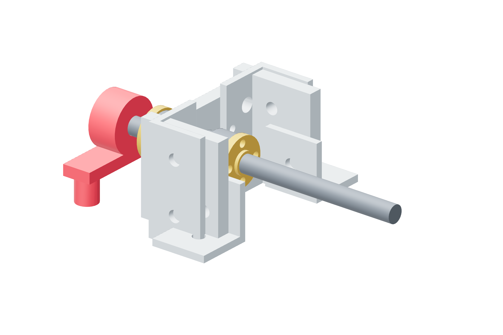

Screw drives / six copies47 / 179
Support the fixed cartridge on metal
The KP08 housing sits on two metal risers. The built thrust legs receive the bulkhead’s four shared M6 posts and the retained axes’ extended spring-seat posts.
AddPer drive: KP08 · 2 metal fixed risers · 2 M4 × 35 / ≥10 mm OD washers / nuts · 4 M6 bulkhead posts on 24 × 44 mm pattern
Tools / setupReceived bearing · metal shims · caliper · hand rotation

- Transfer the received KP08 holes into its floor. Start both M4 × 35 joints on the two nominal 11.35 mm metal risers.
- Finish riser height to the actual bearing center: screw datum is 26.35 mm above floor. Use ≥10 mm OD M4 washers to bridge the 8 mm spacer bore; never pull a misaligned housing down.
- Prepare twelve retained-axis M6 × 80 posts: cut/deburr to 72.5 mm under-head length and chase each cut thread with a nut.
- Use M6 × 25 posts for X/Y/yaw; use M6 × 80 finished to 72.5 mm for Z/pitch/roll, reserving their extensions for spring seats.
- Seat the shared bulkhead post-angle joints and radial housing progressively while the screw still turns freely by hand.
Ready when
Radial and thrust centers agree, the bulkhead has a complete metal support and hand rotation has no tight region or housing twist. A skewed housing or unsupported bulkhead fails the cartridge. Correct its shim/support arrangement before adding a nut, belt or carried load.